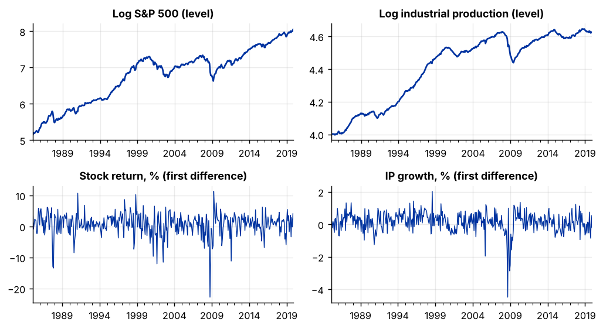
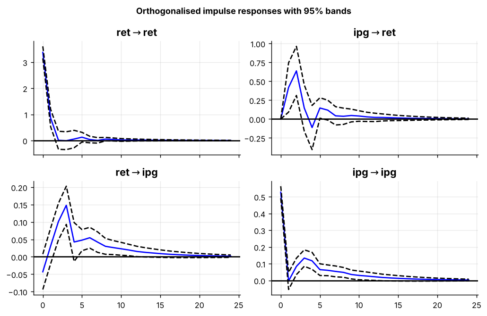

Step 1The question and the model
The question is: do stock prices and real activity help to predict each other? Finance theory says stock prices are forward-looking and should lead output; a feedback from output to prices is also possible.
A vector autoregression (VAR) treats every variable as endogenous. Each variable is regressed on its own lags and the lags of the others, so you do not have to decide in advance which one is "the" dependent variable.
The model selection tool found that the log S&P 500 and log industrial production are both I(1) and are not cointegrated. With no long-run relationship to preserve, the correct model is a VAR in first differences:
The first difference of a log, multiplied by 100, is a percentage growth rate, so the VAR is in monthly stock returns and monthly industrial production growth.
Why not estimate the VAR in levels?
With unit roots and no cointegration, a regression in levels is a spurious regression: the usual t- and F-tests are not valid. If the series were cointegrated, differencing would throw away the long-run relationship, and you would need the VECM guide instead. This is why the cointegration test comes before the model.
How to write it: model section
Augmented Dickey–Fuller tests indicate that the log S&P 500 index and log industrial production are integrated of order one, and the Johansen trace test finds no cointegrating relationship between them (trace statistic 4.74 against a 5% critical value of 15.49). We therefore model the joint dynamics of the two series with a vector autoregression in first differences, \(\Delta y_t = c + \sum_{i=1}^{p} A_i \Delta y_{t-i} + u_t\), where \(\Delta y_t\) contains the monthly stock return and the monthly growth rate of industrial production, both in percent.
Step 2Load the data and take first differences
import pandas as pd
import numpy as np
import matplotlib.pyplot as plt
from statsmodels.tsa.api import VAR
from statsmodels.tsa.stattools import adfuller
levels = pd.read_csv("prices.csv", parse_dates=["date"]).set_index("date")
levels.index.freq = "MS"
d = (100 * levels.diff().dropna()).rename(columns={"log_sp500": "ret", "log_indpro": "ipg"})
for name, data in (("levels", levels), ("first differences", d)):
for col in data:
print(f"{name:18s} {col:11s} ADF p-value = {adfuller(data[col], autolag='AIC')[1]:.3f}")
print(d.describe().T[["mean", "std", "min", "max"]].round(3))levels log_sp500 ADF p-value = 0.654
levels log_indpro ADF p-value = 0.303
first differences ret ADF p-value = 0.000
first differences ipg ADF p-value = 0.000
mean std min max
ret 0.697 3.537 -22.804 11.353
ipg 0.149 0.609 -4.485 2.039fig, ax = plt.subplots(2, 2, figsize=(8, 4.4))
levels["log_sp500"].plot(ax=ax[0, 0], title="Log S&P 500 (level)"); levels["log_indpro"].plot(ax=ax[0, 1], title="Log industrial production (level)")
d["ret"].plot(ax=ax[1, 0], lw=.8, title="Stock return, % (first difference)"); d["ipg"].plot(ax=ax[1, 1], lw=.8, title="IP growth, % (first difference)")
for a in ax.ravel(): a.set_xlabel("")
plt.tight_layout()
How to read it
In levels the ADF p-values are far above 0.05: both series have a unit root. After differencing they are 0.000: the growth rates are stationary. The plots show the same thing. The levels trend and wander; the differences move around a constant mean.
One observation is lost by differencing, leaving 419 months.
Step 3Choose the lag order
The lag order \(p\) is chosen with information criteria. Each one trades off fit against the number of parameters; the lowest value wins.
selection = VAR(d).select_order(maxlags=12)
print(selection.summary())
print("Chosen lag order:", selection.selected_orders) VAR Order Selection (* highlights the minimums)
==================================================
AIC BIC FPE HQIC
--------------------------------------------------
0 1.567 1.586 4.791 1.575
1 1.425 1.484 4.159 1.449
2 1.294 1.392 3.647 1.333
3 1.218 1.356* 3.380 1.272*
4 1.210* 1.387 3.353* 1.280
5 1.227 1.443 3.409 1.312
6 1.223 1.479 3.397 1.324
7 1.232 1.527 3.428 1.349
8 1.249 1.584 3.486 1.381
9 1.264 1.638 3.539 1.412
10 1.280 1.693 3.596 1.443
11 1.293 1.746 3.643 1.472
12 1.294 1.787 3.649 1.489
--------------------------------------------------
Chosen lag order: {'aic': np.int64(4), 'bic': np.int64(3), 'hqic': np.int64(3), 'fpe': np.int64(4)}How to read it
The star marks the minimum of each column. AIC and FPE choose 4 lags; BIC and HQIC choose 3. The criteria often disagree, because BIC penalises extra parameters more heavily.
A sound rule: start from the AIC choice, check that the residuals are free of serial correlation (Step 5), and use the BIC choice as a robustness check. Too few lags leave autocorrelation in the residuals, which invalidates the tests. A few too many lags only costs some precision.
Step 4Estimate the VAR
p = selection.aic
var = VAR(d).fit(p)
print(var.summary()) Summary of Regression Results
==================================
Model: VAR
Method: OLS
Date: Thu, 12, Nov, 2026
Time: 08:37:37
--------------------------------------------------------------------
No. of Equations: 2.00000 BIC: 1.36962
Nobs: 415.000 HQIC: 1.26399
Log likelihood: -1407.66 FPE: 3.30327
AIC: 1.19490 Det(Omega_mle): 3.16453
--------------------------------------------------------------------
Results for equation ret
=========================================================================
coefficient std. error t-stat prob
-------------------------------------------------------------------------
const 0.425327 0.180532 2.356 0.018
L1.ret 0.265050 0.049597 5.344 0.000
L1.ipg 0.793838 0.314812 2.522 0.012
L2.ret -0.059726 0.051590 -1.158 0.247
L2.ipg 1.003538 0.302136 3.321 0.001
L3.ret -0.022126 0.052038 -0.425 0.671
L3.ipg -0.115577 0.297573 -0.388 0.698
L4.ret -0.047959 0.052253 -0.918 0.359
L4.ipg -0.558341 0.303367 -1.840 0.066
=========================================================================
Results for equation ipg
=========================================================================
coefficient std. error t-stat prob
-------------------------------------------------------------------------
const 0.023815 0.028297 0.842 0.400
L1.ret 0.009193 0.007774 1.183 0.237
L1.ipg -0.005987 0.049345 -0.121 0.903
L2.ret 0.029732 0.008087 3.677 0.000
L2.ipg 0.151728 0.047358 3.204 0.001
L3.ret 0.037858 0.008157 4.641 0.000
L3.ipg 0.220567 0.046643 4.729 0.000
L4.ret -0.001764 0.008190 -0.215 0.829
L4.ipg 0.132062 0.047551 2.777 0.005
=========================================================================
Correlation matrix of residuals
ret ipg
ret 1.000000 -0.081456
ipg -0.081456 1.000000How to read it
There is one equation per variable. In the ipg equation, the second and third lags of the stock return are positive and highly significant: a rise in stock prices is followed by faster industrial production growth two to three months later. In the ret equation, the first two lags of industrial production growth are also significant.
Individual VAR coefficients are hard to interpret because the lags interact. Do not build your results section on them. Papers report three summaries instead: Granger causality tests, impulse responses and variance decompositions, which follow below. Most papers put the coefficient table in an appendix.
The correlation of the residuals (−0.08) is small. That will matter in Step 7.
Step 5Check stability and the residuals
A VAR is only usable if it is stable and its residuals are free of serial correlation.
print("Stable:", var.is_stable())
print("Moduli of the companion-matrix eigenvalues:", np.sort(1 / np.abs(var.roots))[::-1].round(3))
for h in (12, 24):
test = var.test_whiteness(nlags=h)
print(f"Portmanteau test, {h} lags: statistic = {test.test_statistic:.2f} p-value = {test.pvalue:.3f}")
normality = var.test_normality()
print(f"Jarque-Bera (multivariate): statistic = {normality.test_statistic:.1f} p-value = {normality.pvalue:.3f}")
from statsmodels.stats.diagnostic import het_arch
for col in var.resid:
print(f"ARCH test, {col} equation: p-value = {het_arch(var.resid[col], nlags=6)[1]:.3f}")Stable: True Moduli of the companion-matrix eigenvalues: [0.833 0.593 0.593 0.54 0.535 0.535 0.401 0.401] Portmanteau test, 12 lags: statistic = 28.27 p-value = 0.656 Portmanteau test, 24 lags: statistic = 66.94 p-value = 0.851 Jarque-Bera (multivariate): statistic = 1543.7 p-value = 0.000 ARCH test, ret equation: p-value = 0.004 ARCH test, ipg equation: p-value = 0.009
How to read it
- Stability. All eigenvalues of the companion matrix have modulus below 1 (the largest is 0.83), so the VAR is stable: shocks die out, and impulse responses are meaningful. A modulus at or above 1 would mean the system is not stationary, and you should check the differencing and the lag order.
- Serial correlation. The portmanteau test has the null of no residual autocorrelation. The p-values of 0.66 and 0.85 do not reject it, so four lags are enough. If this test rejected, you would add lags.
- Normality. Rejected, as is usual with financial data and extreme months such as October 2008. Estimates stay consistent; with over 400 observations the asymptotic tests remain usable. Report the result.
- ARCH. Both equations show volatility clustering. This does not bias the coefficients but affects standard errors, which is a reason to treat borderline p-values with caution.
How to write it: specification and diagnostics
The lag length is set to four months, as selected by the Akaike information criterion; the Schwarz criterion selects three, and results with three lags are reported as a robustness check. The estimated VAR is stable, with all eigenvalues of the companion matrix inside the unit circle (largest modulus 0.83). A portmanteau test does not reject the null of no residual autocorrelation up to 12 lags (p = 0.66). Multivariate normality of the residuals is rejected, reflecting a small number of extreme observations, and the residuals show ARCH effects, as is common for monthly financial data.
Step 6Granger causality
Variable \(x\) Granger-causes \(y\) if past values of \(x\) improve the forecast of \(y\) beyond what the past of \(y\) alone provides. The null hypothesis is no Granger causality: all coefficients on the lags of \(x\) in the equation for \(y\) are zero.
tests = [("ipg", "ret", "Stock returns -> IP growth"), ("ret", "ipg", "IP growth -> stock returns")]
for caused, causing, label in tests:
t = var.test_causality(caused, causing, kind="f")
print(f"{label:30s} F = {t.test_statistic:6.2f} p-value = {t.pvalue:.4f}")Stock returns -> IP growth F = 13.06 p-value = 0.0000 IP growth -> stock returns F = 4.58 p-value = 0.0012
How to read it
Both nulls are rejected at the 1% level, so predictability runs in both directions. The evidence is much stronger from stock returns to industrial production (the larger F-statistic), which fits the view that stock prices look ahead.
"Granger causality" is about prediction, not cause. Stock prices may rise because investors expect output to grow; that does not mean higher prices cause the growth. Use the phrase "Granger-causes" or "helps to predict", never "causes".
Step 7Impulse responses
An impulse response shows how each variable reacts over time to a one-time shock in one of them. Because the residuals of the two equations are correlated, the shocks must be separated first. The standard method is the Cholesky decomposition, which requires an ordering: the first variable can affect the second within the same month, but not the reverse.
We order stock returns first. The justification is practical: the S&P 500 series is an average over the month, while industrial production for a month is published only in the middle of the next month, so stock prices cannot react to it within the month.
irf = var.irf(24)
fig = irf.plot(orth=True, figsize=(8, 5.2), signif=0.05)
fig.suptitle("Orthogonalised impulse responses with 95% bands", fontsize=10, fontweight="bold")
plt.tight_layout()
cum = irf.orth_cum_effects
print("Cumulative response to a one-standard-deviation shock (percent)")
print(f"{'months':>7s}{'ret -> ret':>12s}{'ret -> ipg':>12s}{'ipg -> ret':>12s}{'ipg -> ipg':>12s}")
for h in (1, 3, 6, 12, 24):
print(f"{h:7d}{cum[h, 0, 0]:12.2f}{cum[h, 1, 0]:12.2f}{cum[h, 0, 1]:12.2f}{cum[h, 1, 1]:12.2f}")
print("Size of a one-s.d. shock: ret", irf.orth_irfs[0, 0, 0].round(2), " ipg", irf.orth_irfs[0, 1, 1].round(2))Cumulative response to a one-standard-deviation shock (percent)
months ret -> ret ret -> ipg ipg -> ret ipg -> ipg
1 4.23 -0.01 0.42 0.52
3 4.24 0.24 1.20 0.74
6 4.46 0.38 1.35 0.98
12 4.61 0.54 1.57 1.20
24 4.69 0.61 1.68 1.29
Size of a one-s.d. shock: ret 3.37 ipg 0.53How to read it
Each panel shows the response of one variable (named second in the panel title) to a shock in another. The dashed lines are 95% confidence bands: a response is statistically different from zero only where the band excludes zero.
- A stock-return shock of one standard deviation (3.4%) is followed by significantly higher industrial production growth two to three months later. The cumulative effect, which is the effect on the level of industrial production because the VAR is in growth rates, builds to about 0.6% after two years.
- An industrial-production shock (0.5%) raises stock returns over the next two months, with a cumulative effect of about 1.7%.
- All responses return to zero, as they must in a stable VAR.
Because the model is in first differences, always say whether you are describing the response of the growth rate or the cumulative response of the level. Readers usually care about the level.
Step 8Variance decomposition
The forecast error variance decomposition (FEVD) answers a different question: of the unpredictable movements in each variable, what share is due to each shock?
fevd = var.fevd(24)
print("Share of forecast error variance (%)")
print(f"{'horizon':>8s}{'ret: own':>10s}{'ret: ipg':>10s}{'ipg: ret':>10s}{'ipg: own':>10s}")
for h in (1, 6, 12, 24):
s = 100 * fevd.decomp[:, h - 1, :]
print(f"{h:8d}{s[0, 0]:10.1f}{s[0, 1]:10.1f}{s[1, 0]:10.1f}{s[1, 1]:10.1f}")Share of forecast error variance (%)
horizon ret: own ret: ipg ipg: ret ipg: own
1 100.0 0.0 0.7 99.3
6 95.0 5.0 10.9 89.1
12 94.9 5.1 12.3 87.7
24 94.8 5.2 12.4 87.6How to read it
At a two-year horizon, stock-return shocks account for about 12% of the forecast error variance of industrial production growth, up from under 1% at one month. Industrial production shocks account for about 5% of the variance of stock returns. Each variable is mostly driven by its own shocks, which is normal; what matters is that the cross shares are not zero and that the share of stock shocks in output grows with the horizon.
Statistically significant Granger causality can go with a small variance share. Report both: one says whether the link exists, the other how much it matters.
Step 9Robustness checks
The three choices a referee will question are the ordering, the lag length and the sample.
def summary(data, lags, order):
res = VAR(data[order]).fit(lags)
f = res.irf(24)
i_ret, i_ip = order.index("ret"), order.index("ipg")
share = 100 * res.fevd(24).decomp[i_ip, 23, i_ret]
return (res.test_causality("ipg", "ret", kind="f").pvalue, res.test_causality("ret", "ipg", kind="f").pvalue,
f.orth_cum_effects[24, i_ip, i_ret], share)
cases = {
"Baseline (4 lags, ret first)": (d, 4, ["ret", "ipg"]),
"Reverse ordering (ipg first)": (d, 4, ["ipg", "ret"]),
"3 lags (BIC)": (d, 3, ["ret", "ipg"]),
"8 lags": (d, 8, ["ret", "ipg"]),
"Sample 1985-2007": (d[:"2007-12"], 4, ["ret", "ipg"]),
"Sample 2010-2019": (d["2010-01":], 4, ["ret", "ipg"]),
}
print(f"{'':30s}{'GC p: ret->ipg':>15s}{'GC p: ipg->ret':>15s}{'cum. IP resp.':>14s}{'FEVD share %':>13s}")
for name, (data, lags, order) in cases.items():
a, b, c, s = summary(data, lags, order)
print(f"{name:30s}{a:15.4f}{b:15.4f}{c:14.2f}{s:13.1f}")GC p: ret->ipg GC p: ipg->ret cum. IP resp. FEVD share % Baseline (4 lags, ret first) 0.0000 0.0012 0.61 12.4 Reverse ordering (ipg first) 0.0000 0.0012 0.71 13.9 3 lags (BIC) 0.0000 0.0022 0.60 13.6 8 lags 0.0000 0.0337 0.69 14.7 Sample 1985-2007 0.0019 0.6330 0.26 6.7 Sample 2010-2019 0.2128 0.7586 0.09 5.9
How to read it
This table changes the conclusions, which is exactly what a robustness table is for.
- Ordering and lag length do not matter. Reversing the ordering, or using 3 or 8 lags, leaves the tests and the size of the responses almost unchanged. The ordering is harmless here because the residual correlation is only −0.08.
- The sample matters a great deal. Before 2008, stock returns still Granger-cause industrial production (p = 0.002), but the cumulative response is less than half as large (0.26% against 0.61%). The reverse channel, from industrial production to stock returns, disappears completely (p = 0.63).
- After 2010 neither test rejects. With only 120 months the tests have low power, so this is weak evidence of no relationship, but it is certainly not evidence for one.
The honest summary: stock returns lead industrial production, with an effect that the 2008–09 crisis roughly doubles; the feedback from production to returns is a crisis-period result only. A paper that reported only the full-sample numbers would overstate both findings. Always run the subsample check before you write the results section.
Step 10Write the paper
| Section | What goes in it | From which step |
|---|---|---|
| Data | Sources, sample, transformations, unit-root and cointegration tests | Step 2 and the selection tool |
| Method | The VAR equation, why first differences, lag selection, identification (ordering) | Steps 1, 3 and 7 |
| Results | Granger causality table, impulse-response figure, variance decomposition table | Steps 6 to 8 |
| Robustness | Diagnostics, alternative ordering, lag length, subsamples | Steps 5 and 9 |
| Appendix | Full coefficient estimates | Step 4 |
How to write it: results
Table 3 reports Granger causality tests. In the full sample, the null that stock returns do not Granger-cause industrial production growth is rejected at the 1% level (F = 13.06, p < 0.01), as is the reverse null (F = 4.58, p < 0.01). Figure 2 shows the orthogonalised impulse responses. A one-standard-deviation shock to stock returns (3.4%) is followed by a statistically significant rise in industrial production growth two to three months later, and raises the level of industrial production by 0.6% after two years. Stock-return shocks account for 12% of the forecast error variance of industrial production growth at the 24-month horizon.
These full-sample results are influenced by the 2008–09 financial crisis. In the 1985–2007 subsample, stock returns continue to Granger-cause industrial production growth (p < 0.01), but the cumulative response falls to 0.3%, and there is no evidence of predictability running from industrial production to stock returns (p = 0.63). We conclude that stock prices are a leading indicator of real activity, while the apparent feedback from activity to stock prices reflects the crisis period.
What a referee will ask
- Why this ordering? Give an economic or institutional reason, and show the reverse ordering.
- Why differences and not levels? Cite your unit-root and cointegration tests.
- Is the lag length arbitrary? Report the criteria and a different lag length.
- Is this causal? Granger causality is predictive. Structural claims need identifying restrictions that you must defend.
- Is it stable over time? Show subsamples, especially around 2008.
- Only two variables? Omitted variables, such as interest rates, can create or hide Granger causality. Say so, or add them.